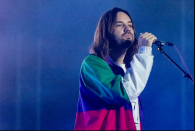

Corría el 2016 y para ese año, Tame Impala ya era tenía un recorrido importante con tres discos espectacularmente recibidos por la crítica como lo fueron Innerspeaker, Lonerism y Currents, siendo este último el que terminó por catapultar a Kevin Parker como un compositor importante en el panorama internacional.
| Artista | Cancion | Fecha |  |
| Lady Gaga | Perfect Illusion | 2016 | |
| Mark Ronson | Uptown Especial | 2015 | |
| Travis Scott | Skeleton | 2018 | |
| The Weeknd | Repeat After Me (Interlude) | 2020 | |
| A$AP ROCKY | Sundress | 2018 | |
| Kali Uchis | Tomorrow | 2018 | |
| Gorillaz | New Gold | 2022 |